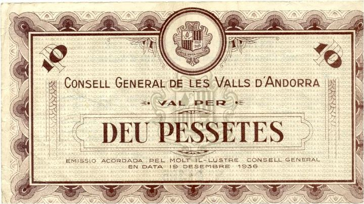

1936-39La Guerra CivilContemporània
Refugiats dels dos bàndols i paper moneda: Andorra davant la Guerra Civil
Context històric
Quan va esclatar la Guerra Civil, el juliol de 1936, Andorra no va ser un front de guerra, però sí un lloc d'arribada de refugiats dels dos bàndols, en dues onades: primer, persones de dretes i religiosos que fugien de la persecució a la rereguarda republicana; després, republicans, anarquistes i socialistes, a mesura que el bàndol franquista guanyava terreny. El bisbe Justí Guitart, copríncep, es va exiliar a Itàlia.
El Consell General va emetre vals que feien de paper moneda: els de dues i de deu pessetes porten la data del 19 de desembre de 1936, i el de dues era bescanviable fins al 31 de desembre de 1938. França va enviar gendarmes a Andorra, una presència que no tota la població va acceptar. Entre els treballadors de FHASA hi havia afiliats a la CNT i la FAI, i les autoritats andorranes els van veure com una font d'inestabilitat.
La bibliografia és escassa i depèn en bona part del llibre d'Amparo Soriano. Per això continua oberta la pregunta sobre quina posició van adoptar les institucions andorranes. Alguns textos les situen més a prop del bàndol franquista; és una interpretació que les fonts consultades no permeten confirmar.
Dades, lectures i dubtes
- Dada
- Arribada de refugiats dels dos bàndols, bisbe Guitart a l'exili, vals del Consell General (19-12-1936) i presència de gendarmes francesos.
- Qüestió oberta
- Quina posició van adoptar les institucions andorranes: la bibliografia és escassa i depèn en bona part d'un sol llibre.
- Hipòtesi
- Que les institucions s'inclinessin més cap al bàndol franquista: algun text ho suggereix, però les fonts consultades no ho documenten.
Multimèdia

Fonts
- Viquipèdia, «Andorra durant la Guerra Civil espanyola»
- Numista, 2 pessetes, Consell General, 19-12-1936
- Numista, 10 pessetes (emissió provisional), Consell General, 22-12-1937
- Euskal Memoria Digitala, «Dos pessetes»
- Amparo Soriano, Andorra durant la Guerra Civil espanyola, Consell General. Citat a la Viquipèdia
- Francesc Badia i Batalla (1997), «El refugi de clergues i religiosos a Andorra durant la persecució de 1936-1939». Citat a la Viquipèdia